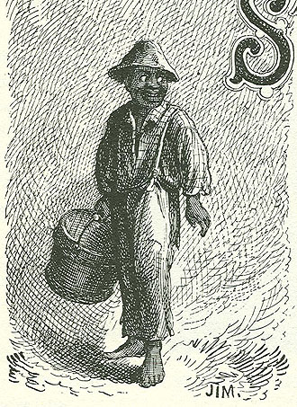

|
 There are
three boys in Aunt Polly's house: Tom, his half-brother
Sid, and "Jim," whom the narrator introduces in Chapter 1
as "the small colored boy." This and the next illustration
appear on facing pages in Chapter 2, after which Jim
disappears from novel entirely. Jim is based on Sandy, a slave purchased by Sam Clemens' parents from "a master back in the country" when Sam was about Tom's age. MT mentions Sandy in one of the autobiographical dictations he did in the early years of the 20th century as an example of his mother's sympathetic heart. When Sam complained about Sandy's constant singing around the house, Jane Clemens reminded her son that Sandy had been "sold away from his mother," and to her the singing was "a sign he is not grieving." Whether we believe she was right, this anecdote reminds us of what Tom Sawyer is not representing about someone like Jim. The Barrett Collection, UVA PS1306 .A1 1876b |